Claude Code 2.1.220
一次问题、一次回答、无工具。答案留在临时界面；关闭后回到主线。旧交换只在 BTW 自己的 session-local history 里浏览。
ONE EXCHANGE · REAL RELEASE主 Agent 正在长任务中，你临时问一件事。这里决定：回答时你看到什么、能不能继续追问，以及关闭后主线是否保持干净。
两者都让主 Agent 继续计算，也都不把侧问写进主对话。真正的分歧是：回答后有没有一个可以继续输入的第二个聊天框。
一次问题、一次回答、无工具。答案留在临时界面；关闭后回到主线。旧交换只在 BTW 自己的 session-local history 里浏览。
ONE EXCHANGE · REAL RELEASE临时侧线程内可以连续追问，也能把选中内容装入主 editor。主任务继续算，但用户此刻仍只能操作 BTW 这一边。
MULTI-TURN · BEHAVIOR REFERENCEBTW 只进非浮动 Command Dialog；不加正常屏 widget、statusline 或 routine transcript。展开时 Todo 和 Agent roster 暂时让位。
ZERO NORMAL-SCREEN ROWS@juicesharp/rpiv-btw 为 4,700、@narumitw/pi-btw 为 7,640、pi-btw 为 8,391。下载量只说明采用信号。选定 A 后，Pi Stuff 将 fork 更小的 @juicesharp/rpiv-btw@2.3.1：它正好是一条 no-tool 独立请求，无 runtime dependency，并在 Pi 0.83 下通过 111 项测试。下载更多的候选分别偏向多轮侧线程和带工具的完整子会话，产品形状不合适。三案关闭时都占零行，主 transcript 都不会出现 BTW 问答。A 看完一答就回主线；B 可以停留追问；C 发出后立即回主线、以后自己来取答案。
BTW 只承担“根据主会话已经知道的内容，回答这一个问题”。需要继续讨论或调用工具时，提升为已有 Agent/session，而不是让 BTW 长成第二个聊天。
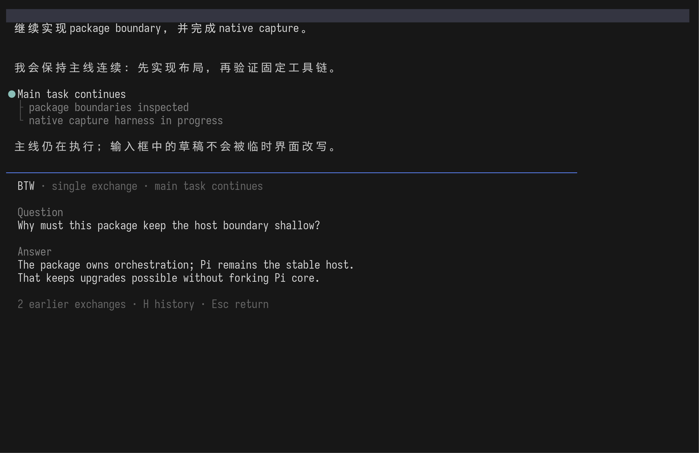
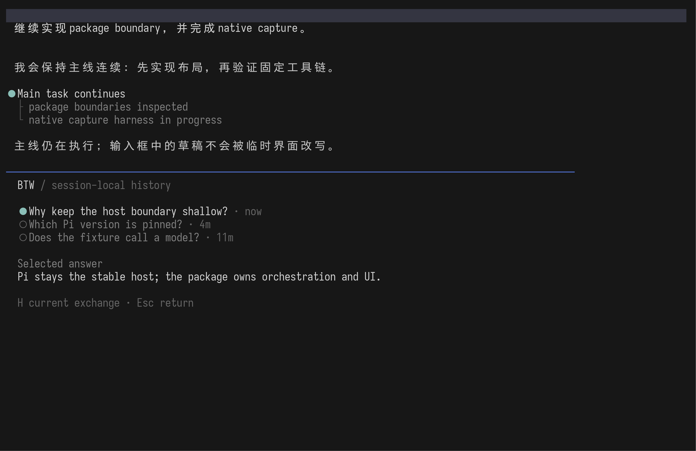
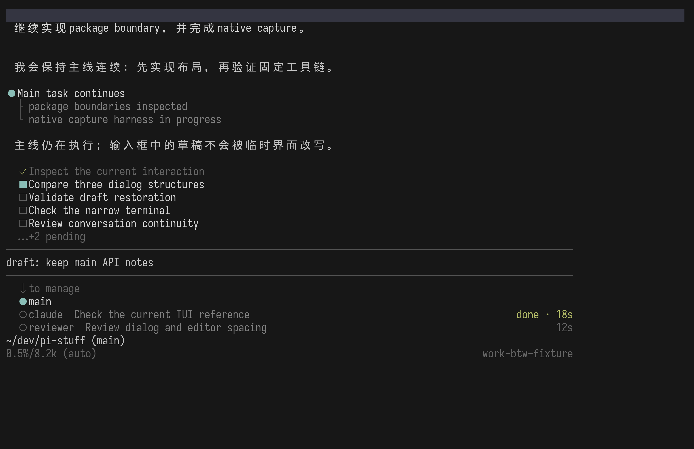
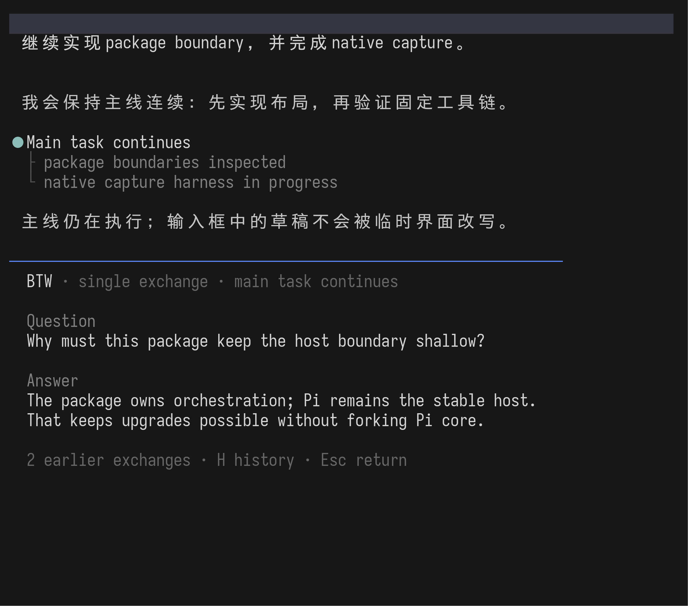
边界最清楚，也最接近 Claude。BTW 不会逐渐取代 main conversation 或 Agent。
主任务继续计算，但你正在阅读 BTW 时不能同时输入主提示；需要澄清只能再问一次或提升为 session。
这是当前 @narumitw/pi-btw 最接近的使用形态。BTW 有自己的 composer；你可以继续对话，也可以把选中答案放回 main draft，但关闭便丢弃整条临时线程。
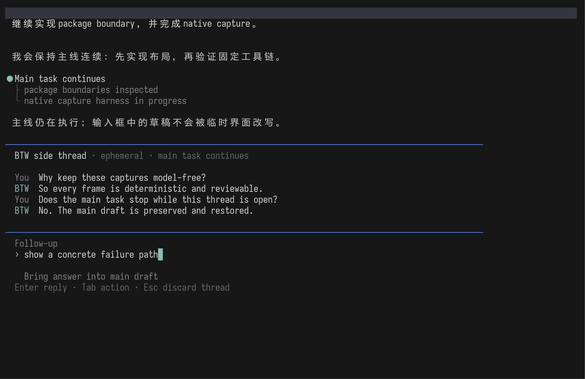
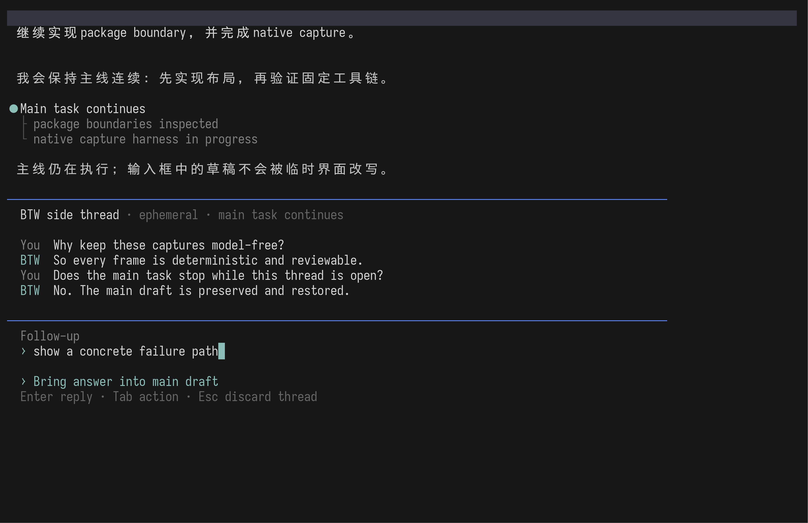

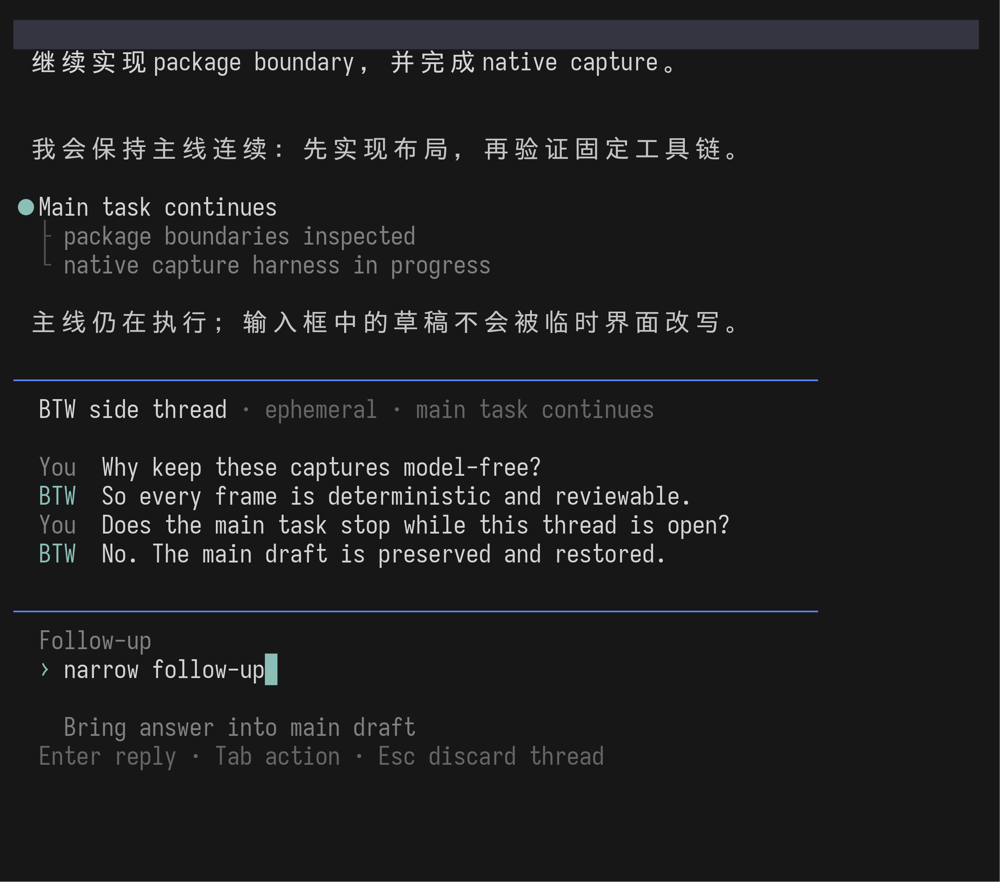
第一答通常需要澄清时，不必反复关闭和重新打开 BTW；现成 Package 也已验证这条能力路径。
BTW 变成第二条聊天后，用户容易在里面停留很久；它与 main session、Agent session 的职责边界开始模糊。
这是唯一真正让用户也能立刻继续主对话的方案。但我们已经拒绝 BTW widget、statusline 和 transcript 通知，因此正常屏没有任何地方告诉你答案是否完成。

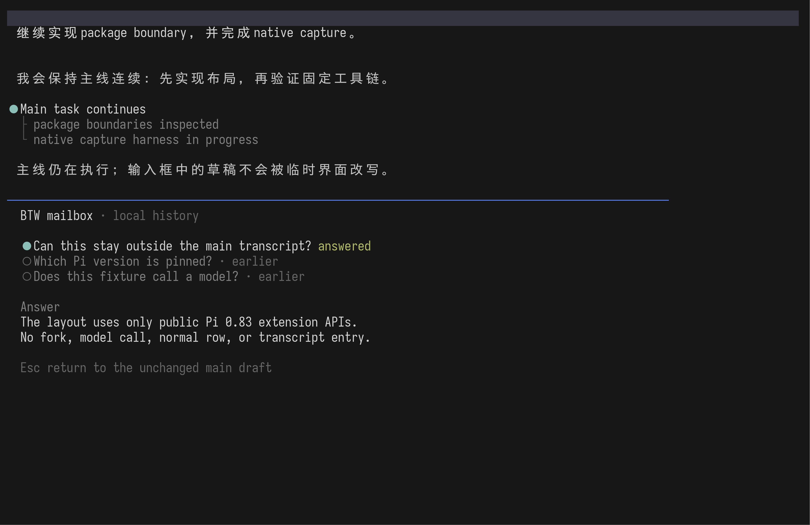
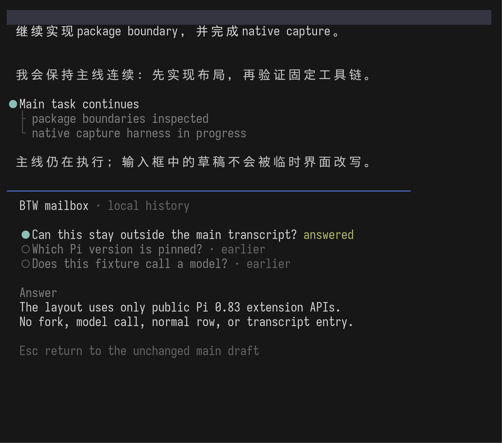
用户和主 Agent 都能继续，BTW 完全不会抢占长期屏幕空间。
除非新增另一种通知渠道，否则用户必须反复打开 BTW 才知道结果；失败也可能静默。
隔离 fixture 故意让 main request 延迟，同时回答 BTW。release binary 的真实行为显示：BTW 暂时占据焦点；Esc 后 main live row 恢复，而且 fixture 的 main response 此时仍未返回。证据证明 BTW 没有取消主任务，但没有捕获更晚的主任务完成状态。
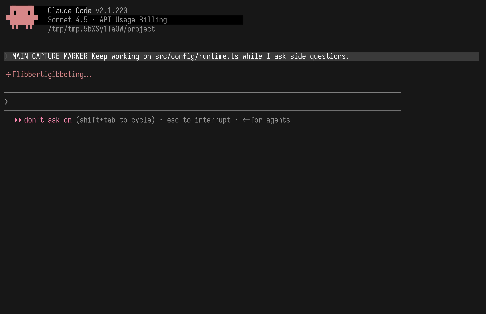
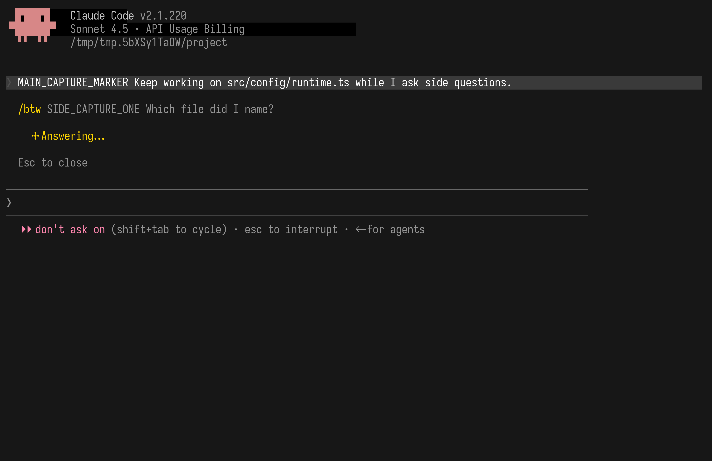
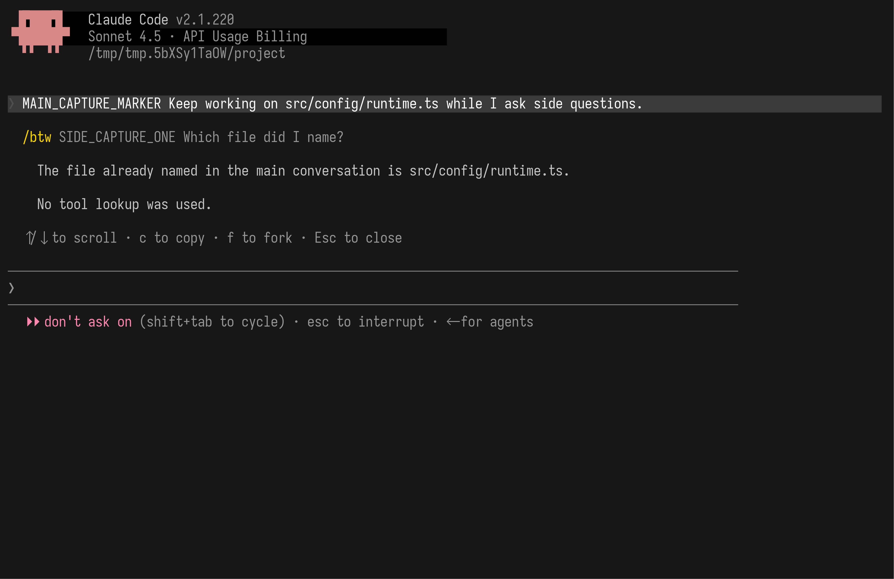
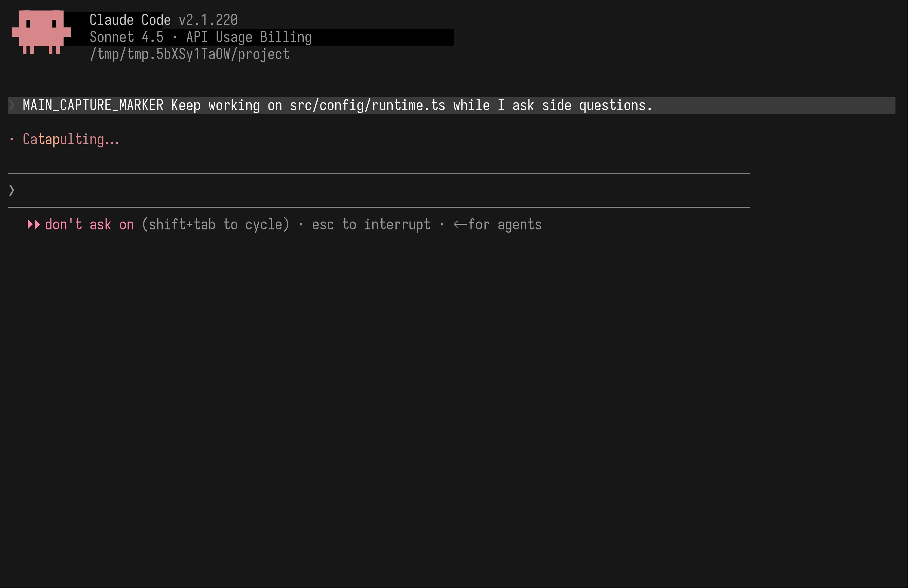
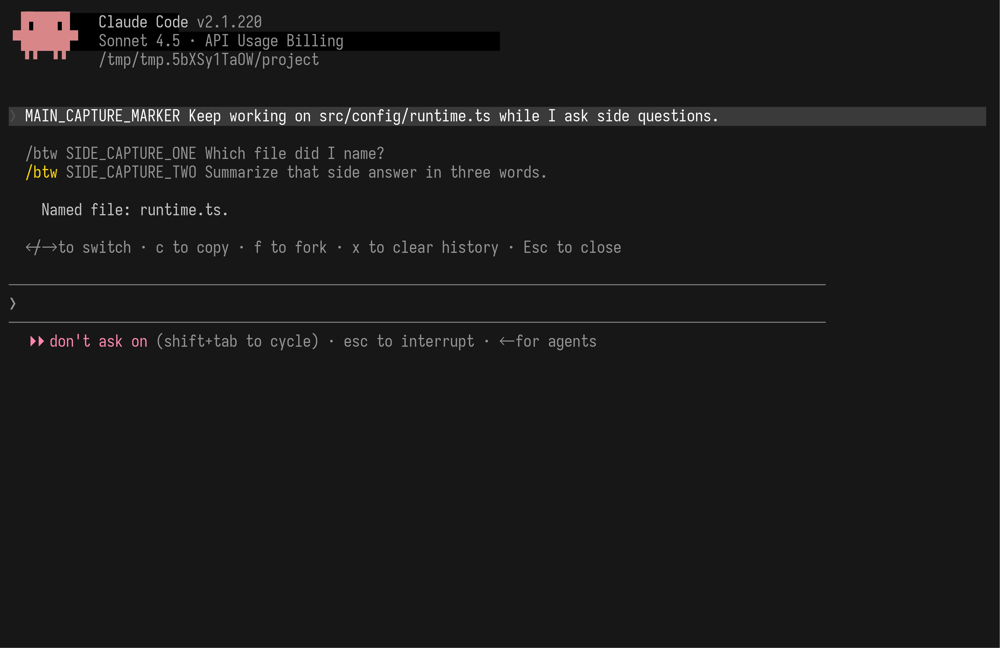
x 清历史；它仍不进入主 transcript。B 更宽容，但它把 BTW 变成另一条聊天。C 让用户马上回主线，却没有自然的完成反馈。A 的限制反而让 BTW、main conversation 和 Agent 三者边界最容易理解。
@juicesharp/rpiv-btw@2.3.1 的 Pi Stuff owned fork 进入 Suite，不直接依赖 upstream。Pi 方案由 Pi 0.83 capture script、throwaway Extension 与 model-free session fixture 生成。Claude reference 由 pinned-release capture 与 localhost fixture 生成。外部事实来自 Claude Code BTW docs、@juicesharp/rpiv-btw、@narumitw/pi-btw 与 pi-btw；最终 source-base 审计见 Work BTW Package reference。